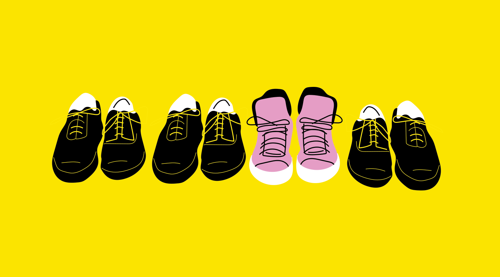
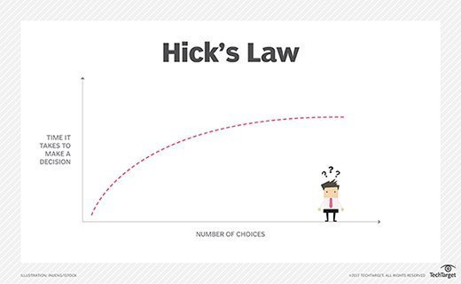
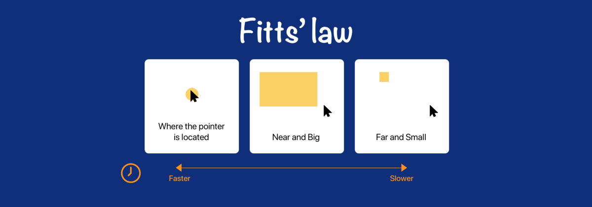
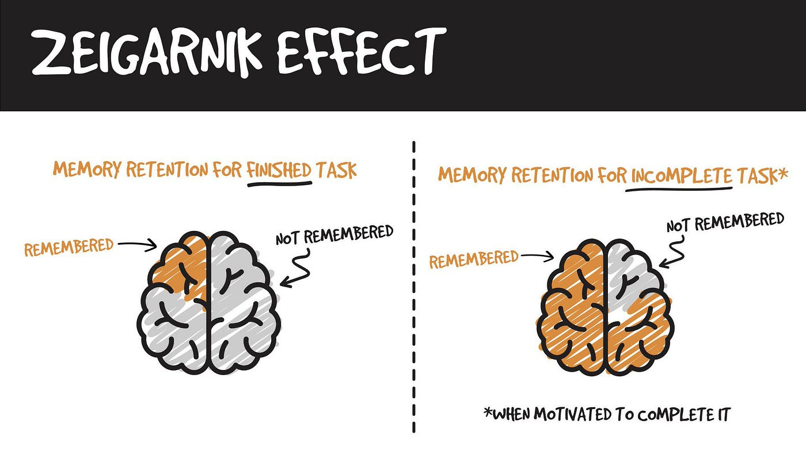
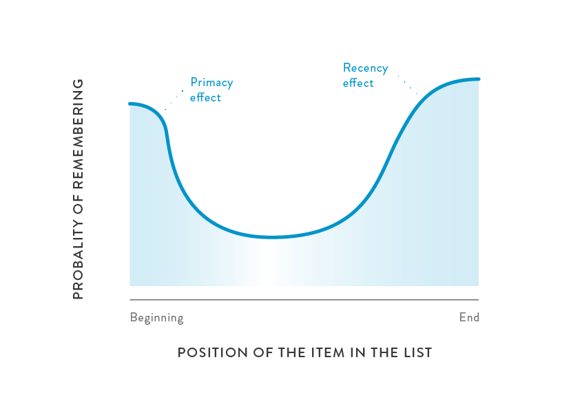

Blog Post 4
Reflection on Lecture Slides
The lecture slides explore semiotic systems, IA, UI and UX. When designing an interface one should try follow the next process:
- Goal Alignment
- Information Structure - Content Mapping
- User Flow - Screens, Behaviours, and Decisions
- Interface Elements
- Design - Style Guide & Wireframes
- Implementation
Goal Alignment:
You should have a goal in mind and make it easy to implement and be able to communicate it clearly.
- Your Goal: What do you want users to see and do?
- Your User: Who is your audience? Why are they on your website and what do they want to see and do?
- Your Content: What kind of content do you have? What is most important and interesting for you and your audience?
Information Structure:
Map out your content in the form of either a mindmap, bubble map or treemap, by sectioning out the screens into different parts. Ask yourself what content you want on the screen and how you want to place it and why?
User Flow:
Map your user’s movement through your info. The user’s flow should be in a chronological format. Map out the navigation system.
Interface Elements:
Think about how you want to represent your interaction points. Buttons, checkboxes, slider, progress bar.
Design Principles:
Your design should be easy to understand and intuitive for the user. All of these steps are extremely important in the design and implementation of your website. Having good designs aids in an easy implementation process. In the lecture slides the User Experience (UX) core principles are explored. Von Restorff Effect states that when multiple similar objects are present, one that differs from the rest is most likely remembered. I think it is important to keep this in mind as you can differentiate an object using size, colour, texture or shape to make it stand out.
https://www.42courses.com/blog/home/behavioural/the-von-restorff-effect Hick’s Law states that the time it takes to make a decision increases with the number and complexity of choices. I think keeping options simple and concise makes the decision less overwhelming, making the user more comfortable while they traverse your website.
https://www.techtarget.com/whatis/definition/Hicks-law Fitt’s Law states that the time to acquire a target is a function of the distance and size of the target. This can be used in good and bad ways by people who create websites. When an ad pops up sometimes the website makes the closing button really small, making it difficult to get out of the ad. This goes against what the user intends to do, however it is all strategic.
https://medium.com/@belindakoech01/fitts-law-9163d2a6207b Zeigarnik Effect states that people remember uncompleted or interrupted tasks better than completed tasks. Use a progress bar instead of literal numbers as it is less overwhelming for the user and this reinforces that users will focus on what they still need to do rather than focusing on what they have already done.
https://ecaruso01.medium.com/the-zeigarnik-effect-and-its-design-implications-a525e3e996ac Serial Position Effect states that users have a propensity to best remember first and last items in a series.
https://www.plugandplaydesign.co.uk/psychology-marketers-serial-position-effect/ It is very important to keep these laws and effects in mind when designing and implementing my website. I think by following these tips, the user experience will be enjoyable and will flow smoothly. I also think by following these tips the user will subconsciously feel more in control. When something is easy to follow and understand yet flows and works well together, a user feels more in control of their actions.
User Interface (UI) must be intuitive, simplified and consistent. It is important to be aware of the user's external familiarities. This is how we expect the user to perform when faced with familiar situations. Internal familiarity on the other hand is when the player has traversed through a few sections of your website and starts becoming more familiar with the internal design of your specific site that is uniformly designed. The user should never feel lost or frustrated as this can take away from the user's control. Users enjoy being in control and don't like being told how to do things. Guide the user but do not take away from their control. When designing the user interface, convey the information hierarchy through visual designs like page layout, colour, size, font, and negative space. The website should be accessible to all kinds of devices like mobile, tablet, laptop etc. Your website should also be multimodality meaning it should contain variable amounts of either speech, text, touch, vision sound etc.
When designing this website I will try to make my website as accessible as possible by using understandable, perceivable designs as well as correct semantic markup. Accessibility may seem irrelevant however it is a very important thing to have in your website design.
When designing the website it is important to consider what kind of typography you use in your design. Some fonts are way less legible than others. Having readable text allows for a smooth traversal through the website and doesn't make the user frustrated in any way. It is also important to consider the appeal of the font but still ensure it is legible and has good typography.
In the slides a few art/design principles are explored. As a former high school art student, these principles all rang a bell. Objects appear balanced when they are of similar size, texture, texture and shape. With balance, the shape of two objects could be the same but different colours, but they could still appear balanced. When objects or text are aligned, the eye will follow the image in a flowing manner rather than one that is staggered. Aligned items will always appear more visually appealing than items that are not aligned. When objects are repeated, your eye will follow the change through the composition. Repeating objects can aid in a very aesthetically pleasing effect.
When designing a website it is important to follow the law of locality. Place items where users expect them to be.
Visual information structure refers to the emphasis of an item based on the size, font and colour. Regardless of where text is placed, left to right or top to bottom, the user will always read the largest text, then the second largest and then the smallest. It is just how our eyes and brain follow certain designs.
One can bring attention to a specific item by changing the colour, shape, or size of it. This is referred to as dominance and emphasis. Information hierarchy can be portrayed in different ways like trees, where there are root branches and sub branches, or it can be portrayed as a nest in which elements map onto each other as parents, children or grandchildren. Harmony refers to the visually pleasing arrangement of elements in a design. Harmony can be achieved by using similarity, continuation, repetition, and rhythm.
In the slides, the shape of a button is explored. They state that having a more rounded button appears friendlier than a square/boxed button. A rectangular button is seen as more serious whereas a rounded button is more inviting. One could use a rectangular button on a site where the work environment is more serious, however I think that most people would want to press a rounded button.
Reflection on Video Lecture
In this lecture headers and microformats were explored. Before the lecture on headers and microformats, the term Meta Data was explained. From my understanding Meta Data is the is the information that describes specific data. “It provides context with details such as the source, type, owner, and relationships to other data sets,” according to the Atlan website. This information is not always visible to the user.
What are robots? In my understanding a software robot is something that can do something for you. Web robots specifically are programs that traverse the web automatically. Why would we need these kinds of robots? If we want to test that our website works extremely well, it would take a human user quite a while to do this. If an automated robot is used to check your website, it can be done at a much quicker rate. These bots can be programmed for the greater good, but also can be used in negative ways. For example bots can be programmed to continually provide a user with pop ups, making the experience for the user extremely frustrating. On the Robots.txt website, there is a list of 302 different kinds of web robots that are found on the web. I find it really interesting that there are so many different kinds of bots. Before this lecture I was not aware of what web robots were and how many different types of programs the robots are intended to implement.
Javascript took 10 days to make. Which means that there may have been a few flaws with it. Many websites use Javascript. Unfortunately, if the developers want to change things about Javascript, they would need to change every single website that uses Javascript as well. This is obviously not viable as it would take way too long to do.
The Open Graph Protocol allows users to see a preview of the site when they hover over a link so that they can press to get a better understanding on what the link is taking them to.
Microformats are bits of html that provide information about what data you are showing. You can use cards to provide more information about the site to give bots more information. This information the bots when users search things on a browser, aiming to retrieve sites that return what they have searched.
In the lecture Lucky expanded on accessibility. As mentioned in previous blogs, it is very important to remember that we should always try to design our websites to be accessible to a wider range of users. Dyslexia users can use assistive technologies to change the font on certain websites. Comic Sans font is one of the easiest fonts to read for dyslexics. Keep these things in mind when designing the website.
Reflection on Website So Far
At the moment I think my website is how I would like it to be so far. I have tried my best to use correct semantic markup. I have engaged with all the lecture content and I have enjoyed designing and envisioning what I hope my website will look like. I found it quite difficult to keep up with the content week by week and because of this I fell behind and was not able to submit the blog posts consistently. In the future I hope to manage my time better so that I am less stressed when submitting an assignment. I think there are a few things that can be improved in my website like the sizes of images, better navigation, better semantics etc.